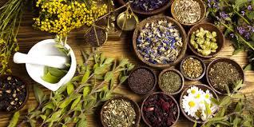

Natural remedies
We provide detailed info on using natural items and their health benifits like plants, fruits, vegetables and spices wihtout side effects.

Medicines
Herbs
We offer guidance on using various herbs like turmeric, ginger, garlic etc for preventing and curing common ailments in a natural way.
Remedies
Fruits
We provide dietary and usage recommendations for health benefits from common fruits like apples, oranges, lemons etc.
Wellness tips
Vegetables
Simple ways to incorporate healthy vegetables like spinach, sweet potato, broccoli etc into your meals for improving vitality.